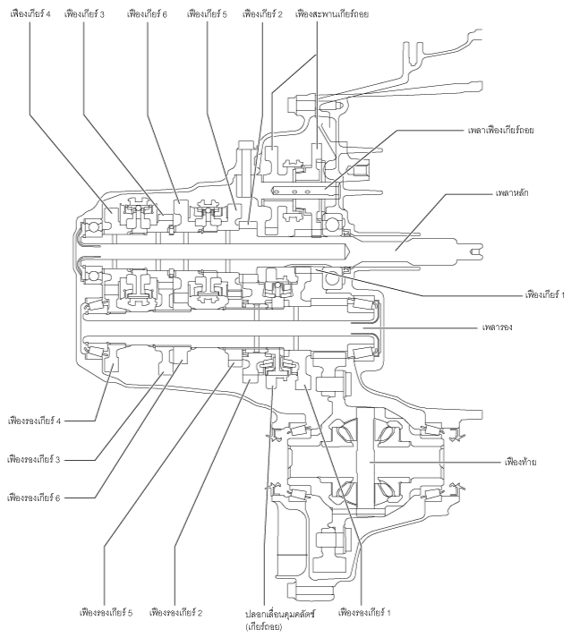
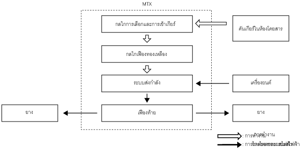

เกียร์ธรรมดา [C66M-R, C66MX-R]
id0515ma283800
จุดประสงค์/การทำงาน
• เกียร์ธรรมดาจะแปลงแรงขับ (ความเร็ว แรงบิด ทิศทางการหมุน) ที่ส่งมาจากเครื่องยนต์ตามการใช้งานคันเกียร์ภายในรถ
โครงสร้าง

am3uun00001754
การทำงาน

am3uun00001755